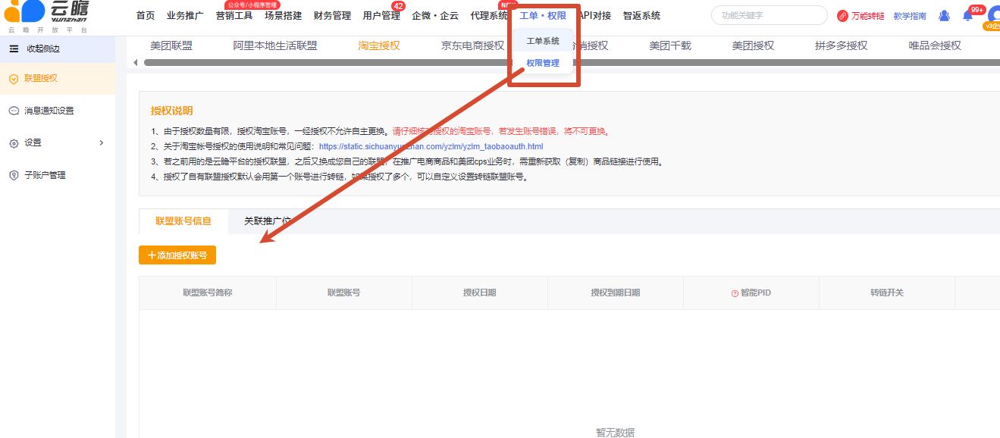
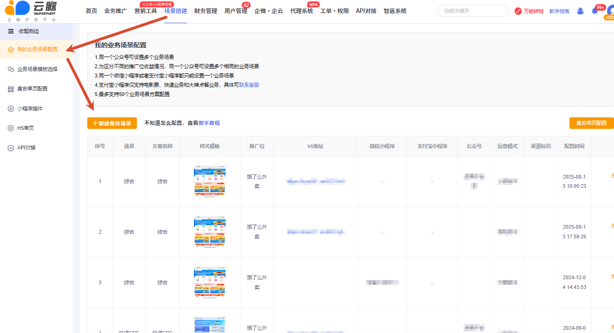

AI 素材可以直接用吗？链接属于谁？
源文档口径为：在云瞻助手生成或获取的文案、图片等素材可由当前用户直接用于推广，无需额外授权。使用时仍需遵守广告法、渠道品牌素材规范和业务推广红线。
覆盖基础素材和链接工具、公众号与小程序搭建、版本能力、代理系统、API、企云和推广大使等飞书原文全部主题。
源文档口径为：在云瞻助手生成或获取的文案、图片等素材可由当前用户直接用于推广，无需额外授权。使用时仍需遵守广告法、渠道品牌素材规范和业务推广红线。
先在后台获取对应业务的小程序推广链接或二维码，用手机进入小程序后点击右上角“复制小程序链接”，再按工具说明处理为 mp:// 形式。mp 链不是官方原链，正式推广前必须测试打开和跟单。
源文档记录：短链/长链常见 3 个月，海报二维码 1–3 个月，mp 链约 1 个月，美团口令约 2 周、闪购口令约 30 天，密令看后台。以上均为历史经验，不是 SLA；链接也可能被提前封禁或失效，应定期巡检。
费用取决于业务、推广方式、会员版本和实名主体。源文档曾记录标准版个人实名包含 10% 技术服务费、8% 对私成本及税费，旗舰/企业/对公存在免技术服务费或 6% 专票等说法；现行答复必须以对应业务结算页和合同为准。
顶部【工单·权限】→【权限管理】，查看美团联盟、阿里本地生活、淘宝、京东电商、唯品会等授权状态，点击“添加授权账号”新增。

关闭分佣后订单仍可能进入分佣数据链路，使用户能在【我的订单】查看记录，但实际不会给用户分钱。若不希望展示，可在对应设置关闭记录显示，云瞻助手会同步该配置。
登录验证码、业务通知、霸王餐 H5 登录验证码和自行开启的短信通知都会消耗。余额不足可能导致用户无法登录或接收业务消息，应结合日均用量设置巡检和提前充值。
通常因为输入的不是官方原始链接，而是已封装或二次转链。源文档支持类型包括 dp 开头的官方原链、官方原始口令和云瞻短链；其他平台短链和 mp:// 链通常无法识别。遇到失败时回到业务后台重新复制官方原链。
源文档记录免费可授权 2 个服务号，认证公众号还可复用信息创建小程序并可能免首年 300 元认证费；数量和费用都需按当前微信及平台政策复核。
先把公众号授权到云瞻，再配置业务场景并获取页面链接。一个公众号只能授权到一个云瞻账号；接收他人账号时，通过【工单·权限】→【创建工单】选择“账号数据迁移”。源文档记录综合场景需旗舰版及以上。

不能只复制固定话术而不先完成整改；申诉内容必须与当前小程序实际行为一致。
查看当前版本对比页。源文档列举的能力包括：不同费率、试吃官 CPA/CPS 权益、更多业务场景、搭建指导、自有联盟、外链、链接数据、微信卡包、裂变红包、抽奖、签到、公众号群发、分销和一键发布等。
应围绕实际需要说明：费率、可搭建场景、团队分佣、营销工具、技术维护和服务支持。原文的“免 10%”“日结 3%”“7×13 小时”等属于历史版本描述，销售前必须以当前价格页和合同为准。
可理解为搭建一套自有品牌的推广小程序和团队系统，允许代理成员自主取链，并可配置业务模块和分级佣金。
完成购买后，将小程序授权到云瞻、关联用户体系、绑定代理系统并配置。平台提供搭建协助；上线前需测试授权、取链、归因、分佣和提现。
源文档区分为：旗舰版偏基础分佣，企业版支持更完整团队分佣；代理系统规模更大，可做自定义域名、贴牌和业务模块配置。实际边界以当前产品版本清单为准。
源文档列出：电商（淘宝、京东、拼多多、唯品会、抖音）、卡券、大牌点餐、同城优惠、快递、霸王餐、电影票、酒店/机票/火车票/运营商卡、外卖、打车和即时零售，可按单业务或全业务对接。对接前确认当前可用渠道和字段。
历史记录为单业务 5,000 元/年、选品广场 8,000 元/年、全业务 25,000 元/年（原价 28,000 元/年），付费后提供接口、前端由客户自行开发。该价格不得直接报价，必须由商务按当前方案确认。
面向企业微信的辅助管理运营工具，可设置客服坐席、分析各客服号客户数据并建立标签。源文档记录其仍在内测、只向部分付费版本试用，并未全量开放。
先按照当前企云流程指引完成企业微信授权、坐席和标签配置。取消授权的原文没有给出完整步骤，应通过正式工单核实后操作，避免影响现有客服号。
源文档曾记录旗舰版 2,999 元/年试用价格，当前标记为待商务确认。
需要先联系顾问开通推广大使活动权限，开启后才可参与直邀奖励。奖励内容以当期活动页为准。
不可以。2026-08-05 群同步明确：旧“是否实名”功能已不生效，无论自主打款还是平台打款，用户端都需要实名；产品侧会移除无效开关。